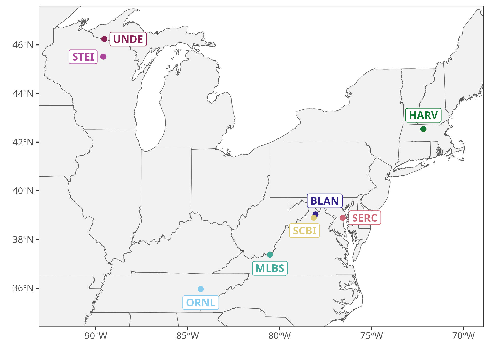

Neon sites and data overview
This project utilizes the US National Ecological Observatory Network (NEON), which collects data about various ecological features and systems. The system that we are primarily interested in, Peromyscus mice and tick-borne disease, is covered by NEON’s small mammal trapping network.
Site locations
Our work focused primarily on eight sites shown by Figure 1 from 2022 to 2024. Information about the sites can be found on NEON’s Field Sites web page.

Figure 1: Upper northeast terrestrial NEON site locations used for this project.
Small mammal data
Through their capture efforts at these sites, NEON has made 47,749 small mammal observations from 47 species and 25,071 unique individuals since its inception (Table 1). From 2022 to 2024, they made 11,958 observations of 6,700 individuals, 4,768 of which are either Peromyscus maniculatus or Peromyscus leucopus. NEON collects information about each individual mouse it catches. Some key traits used by this project are body size, sex, maturity, reproductive status (Table 2).
| Species | all time | 2022-2024 |
|---|---|---|
| Peromyscus leucopus | 10034 | 3184 |
| Peromyscus maniculatus | 4722 | 980 |
| Blarina brevicauda | 3039 | 565 |
| Myodes gapperi | 1592 | 336 |
| Peromyscus leucopus/maniculatus | 1248 | 732 |
| Napaeozapus insignis | 1184 | 155 |
| Tamias striatus | 1119 | 206 |
| Zapus hudsonius | 601 | 54 |
| Mus musculus | 475 | 15 |
| Microtus pennsylvanicus | 454 | 49 |
| Sorex cinereus | 453 | 32 |
| Glaucomys volans | 445 | 198 |
| Peromyscus sp. | 242 | 51 |
| Glaucomys sp. | 190 | 10 |
| Sigmodon hispidus | 173 | 21 |
| Mammalia sp. | 151 | 147 |
| Reithrodontomys humulis | 93 | 80 |
| Glaucomys sabrinus | 70 | 19 |
| Sorex arcticus | 44 | 44 |
| Sorex fumeus | 39 | 11 |
| Microtus pinetorum | 28 | 2 |
| Sorex sp. | 24 | 4 |
| Cryptotis parva | 23 | 15 |
| Tamiasciurus hudsonicus | 18 | 3 |
| Tamias minimus | 15 | 15 |
| Tamias minimus | 15 | 1 |
| Sylvilagus floridanus | 10 | 2 |
| Ochrotomys nuttalli | 8 | 1 |
| Synaptomys cooperi | 7 | 1 |
| Mustela frenata | 4 | 4 |
| Rodentia sp. | 4 | 4 |
| Condylura cristata | 3 | 3 |
| Rattus rattus | 3 | 3 |
| Didelphis virginiana | 3 | 2 |
| Blarina sp. | 3 | 2 |
| Mustela erminea | 2 | 2 |
| Cricetidae sp. | 2 | 2 |
| Mustela sp. | 2 | 1 |
| Sorex hoyi | 2 | 2 |
| Sorex palustris | 2 | 2 |
| Tamias sp. | 2 | 1 |
| Oryzomys palustris | 2 | 2 |
| Mustela nivalis | 1 | 1 |
| Sciurus carolinensis | 1 | 1 |
| Dipodidae sp. | 1 | 1 |
| Sorex longirostris | 1 | 1 |
| Sorex dispar | 1 | 1 |
| obs | ind | date | age | sex | weight | tail | testes | vagina |
|---|---|---|---|---|---|---|---|---|
| 53 | 7730 | 2024-09-26 | adult | M | 24 | 86 | scrotal | NA |
| 103 | 7696 | 2024-08-28 | adult | M | 19 | 70 | nonscrotal | NA |
| 125 | 7715 | 2024-08-30 | subadult | F | 20 | 80 | NA | neither |
| 132 | 6803 | 2022-04-25 | adult | F | 32 | 86 | NA | not plugged |
| 186 | 8034 | 2024-09-28 | adult | F | 28 | 89 | NA | neither |
| 259 | 8061 | 2024-05-08 | adult | F | 26 | 76 | NA | neither |
| 291 | 7843 | 2024-07-02 | adult | M | 20 | 81 | nonscrotal | NA |
| 319 | 8059 | 2024-05-08 | adult | F | 28 | 82 | NA | plugged |
| 353 | 7954 | 2023-07-12 | adult | M | 21 | 69 | nonscrotal | NA |
| 354 | 7051 | 2023-09-08 | adult | F | 19 | 81 | NA | neither |
Community differences across sites
small-mammal communitites: TODO
Other animal communities (e.g., deer, predators): TODO
Other data
In addition to the small mammal data product, we also use other NEON-collected data including
precipitation, and
humidity from NEON’s weather stations; as well as
tick-borne pathogen status.
Further, our working group collected supplemental data in 2022-2024 including
Times at which individuals were captured, which is indicative of their activity/behavior;
Refined estimates of Borrelia infection, which are utilize a detection method that is more sensitive than those used by NEON, including quantitative pathogen burden; and
Expression of six key genes, thought to be important for resistance to and tolerance of Borrelia infection.
Much of this data will be explored in later sections.